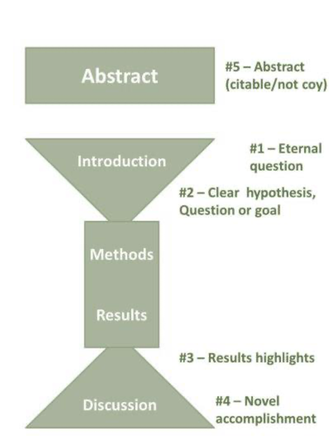

- Generalidades sobre publicaciones con información científica
- Artículos científicos.
- Definición.
- Es la unidad elemental en la que se distribuye y divulga el conocimiento entre científicos.
- Los artículos científicos contienen información novedosa (no publicada antes) sobre un tema específico.
- Estructura
- Título
- Autoría: lista de autores del artículo.
- Resumen y palabras clave
- Principales ideas y descubrimientos realizados en el artículo.
- Se incluye una lista de palabras clave para mejorar la indexación del artículo.
- Introducción
- Identificación de la cuestión a abordar en el artículo (ej. Relación entre la temperatura y el crecimiento de la vegetación)
- Relación del tema a abordar con lo que ya se sabe. Contextualización científica.
- Objetivos del trabajo.
- Hipótesis del trabajo. Esta parte es fundamental porque permite definir las preguntas que los autores se formulan en el trabajo y que tratan de responder en el mismo.
- Material y métodos
- Metodología utilizada para abordar el problema en cuestión.
- Cómo se ha diseñado el trabajo.
- Experimento de campo.
- Análisis de datos existentes.
- Encuestas
- etc.
- Datos utilizados.
- Material (de campo o laboratorio) utilizado.
- Resultados
- Enumeración y descripción de los hallazgos obtenidos. Ej. Al aumentar la temperatura, se reduce la probabilidad de germinación de la planta X.
- Descripción de las evidencias encontradas usando tablas, gráficos, esquemas, etc.
- Discusión
- Valoración de los resultados anteriores a la luz del conocimiento científico existente.
- Incluye un jucio subjetivo de los resultados obtenidos. Ej. El hecho de que al aumentar la temperatura se reduzca la probabilidad de germinación puede deberse a que en estas condiciones proliferan hongos que degradan el tejido...
- Es importante incorporar referencias bibliográficas.
- Conclusiones
- Síntesis del trabajo.
- Principales conclusiones obtenidas.
- Referencias bibliográficas
- Conjunto de artículos (y otro material bibliográfico) que ha sido citado en el texto.
- Es fundamental porque de esta forma relacionamos lo que dice el artículo con lo que han escrito otros colegas.
- Es la forma de materializar la famosa cita de Newton
- 
- Revistas científicas.
- Publicaciones periódicas (mensual o bimensualmente)
- Editadas por
- Sociedades científicas
- Editoriales privadas
- Suelen agruparse por ámbitos temáticos
- Revistas de botánica
- Revistas de ingeniería química.
- Revistas de virología
- etc.
- Artículos o productos de divulgación científica.
-
- Revistas periódicas
- Quercus
- Quo
- Investigación y ciencia
- National geographic
- Canales de videos
-
-
- Informes
- Textos que resumen el conocimiento científico sobre un tema concreto con objeto de incidir en ciertas políticas y procesos de toma de decisiones.
- En teoría son los productos que generan los científicos para ayudar a los gestores a tomar decisiones.
- Ejemplos
-